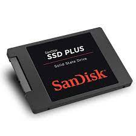
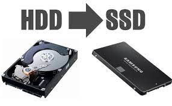
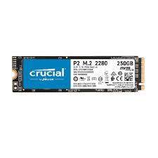

Los discos duros son componentes fundamentales en cualquier computadora, son los encargados de almacenar todos los datos, desde el sistema operativo, los programas y los juegos, hasta los archivos personales como documentos, fotos, música y videos. Existen los discos mecánicos o "HDD" (Hard Disk Drive), los discos de estado sólido o "SSD" (Solid State Drive) y los discos M.2 (M.2 Solid State Drive). Ambos realizan la misma función de almacenamiento, pero lo hacen de formas muy distintas, lo que influye en su durabilidad, precio y el rendimiento del computador.
El disco duro mecánico, o HDD, es la tecnología de almacenamiento más antigua y tradicional. Este tipo de disco funciona mediante un mecanismo interno compuesto por platos magnéticos que giran a altas velocidades y un cabezal que lee y escribe la información en estos platos, es como un pequeño CD. La velocidad de un HDD se mide en revoluciones por minuto (RPM), que indica cuántas veces los platos giran en un minuto. A mayor cantidad de RPM, mayor será la velocidad de acceso a los datos. Las velocidades más comunes son 5400 RPM y 7200 RPM. Una desventaja de los discos mecánicos, es que son más susceptibles a daños físicos debido a sus partes móviles. Una caída o golpe puede dañar los platos o el cabezal, lo que resulta en la pérdida total de datos. Además, con el tiempo, estas partes móviles se desgastan, lo que afecta su vida útil y el rendimiento del computador.
Los discos de estado sólido o SSD utilizan memoria flash para almacenar datos, lo que elimina las partes móviles y permite un rendimiento mucho más rápido y eficiente. Los SSD son considerablemente más rápidos que los HDD en términos de acceso a los datos. Esto se debe a que no necesitan esperar a que un plato gire o que un cabezal se posicione en el lugar correcto. En lugar de eso, la información se lee y escribe directamente en los chips de memoria. Un SSD estándar tiene velocidades de lectura/escritura de entre 500 MB/s a 550 MB/s, lo que permite un arranque mucho más rápido del sistema operativo, tiempos de carga reducidos en aplicaciones y videojuegos, y una mejora general en la fluidez del sistema. Los SSD más modernos, alcanzan velocidades de 3.000 MB/s o más, brindando un rendimiento sin igual para tareas pesadas como edición de video, diseño gráfico, y cargas intensivas de datos. Debido a todas las ventajas que los SSD tienen sobre los HDD, son considerablemente mas caros. También, debido a que los SSD no tienen partes móviles, son mucho más resistentes a los golpes y daños físicos. Esto los hace ideales para laptops y dispositivos portátiles. Además, su vida útil en términos de durabilidad es mayor, ya que no sufren desgaste mecánico.
Los discos M.2 son una forma avanzada de almacenamiento compacto y de alto rendimiento, disponibles en dos variantes, "M.2 SATA" y "M.2 NVMe". Los M.2 SATA ofrecen velocidades similares a los SSD tradicionales, hasta 550 MB/s, mientras que los M.2 NVMe, utilizando la interfaz PCIe, alcanzan entre 3.000 MB/s y 7.000 MB/s, lo que los hace ideales para tareas exigentes como gaming avanzado y edición de video. Los M.2 se conectan directamente a la placa base sin cables, ahorrando espacio interno, y vienen en varios tamaños físicos, como 2230, 2242, 2260, y 2280 (el más común). Es crucial verificar la compatibilidad con la placa base, ya que algunas solo aceptan M.2 SATA o requieren configuraciones en la BIOS para soportar NVMe. Estos discos, al ser muy rápidos, generan más calor, por lo que modelos de alta gama incluyen disipadores o refrigeración. Además, los M.2 ofrecen capacidades desde 250 GB hasta varios terabytes, siendo los más adecuados tanto para mejorar la velocidad del sistema como para manejar grandes volúmenes de datos.
Marcas de SSD: Las principales marcas de SSD incluyen Samsung, conocida por su alto rendimiento y fiabilidad en sus series como 860 EVO y 970 EVO Plus; Crucial (Micron), que ofrece una excelente relación calidad-precio con sus modelos MX500 y P5; WD (Western Digital), que destaca con las series WD Blue y WD Black SN850, ideales para gamers; Kingston, accesible y de buen rendimiento en sus series A2000 y KC2500; y ADATA, que ofrece opciones económicas y de alto rendimiento como la XPG SX8200 Pro para usuarios exigentes.
Marcas de HDD: En discos duros mecánicos, las marcas más reconocidas son Seagate, conocida por su capacidad de almacenamiento masivo con series como Barracuda e IronWolf; WD (Western Digital), que se destaca con sus gamas diferenciadas como WD Blue (uso general), WD Black (alto rendimiento) y WD Red (NAS); y Toshiba, que ofrece buen rendimiento y fiabilidad a precios competitivos con su serie X300 para gaming y N300 para servidores NAS.
Marcas de M.2: Las principales marcas de discos M.2 incluyen Samsung, conocida por su alto rendimiento y fiabilidad en sus series como el 970 EVO Plus y el 980 PRO; Western Digital (WD), que ofrece opciones robustas como las series WD Blue SN550 y WD Black SN850, ideales para gamers; Crucial, que brinda una excelente relación calidad-precio con sus modelos P5 y MX500 (este último es un M.2 SATA); Kingston, reconocida por su rendimiento accesible en las series A2000 y KC2500; ADATA, que propone alternativas económicas y de alto rendimiento como la XPG SX8200 Pro y el GAMMIX S5; y Sabrent, que destaca con el Rocket NVMe por su buena relación calidad-precio y alto rendimiento.
Volver